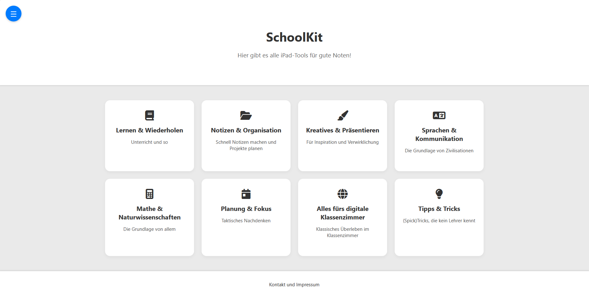
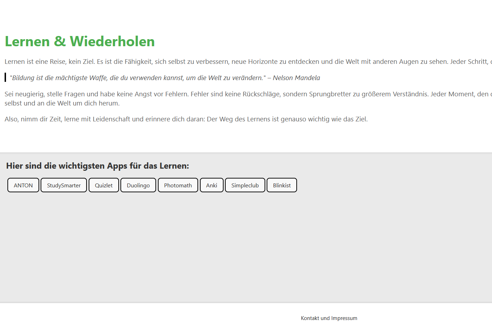
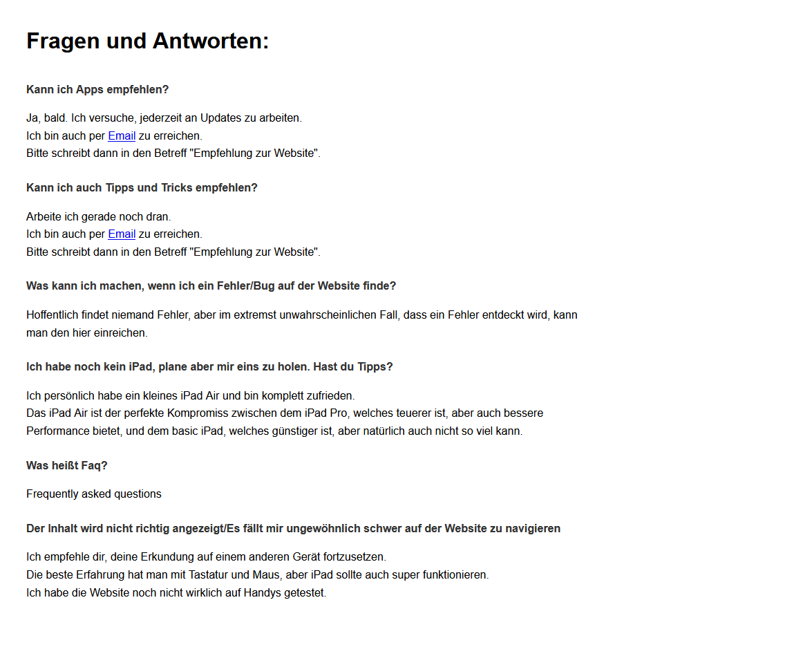
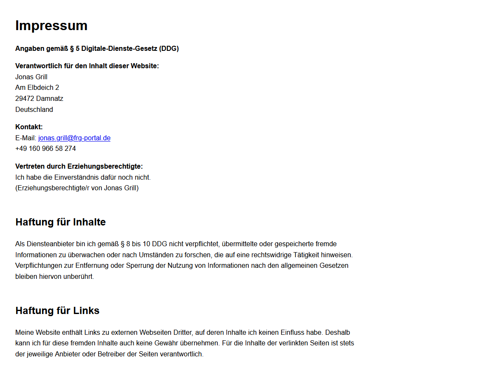

Blumen
Zur SeiteEin kleines, CSS-fokussiertes Projekt, das ich in meiner Freizeit gemacht habe. Es kann ja nicht schaden, Blumen zu haben, oder?
Hier sind einige Projekte und Erfahrungen, die mich für ein Betriebspraktikum qualifizieren.
Ein kleines, CSS-fokussiertes Projekt, das ich in meiner Freizeit gemacht habe. Es kann ja nicht schaden, Blumen zu haben, oder?
Diese Seite war eigentlich mal eine Idee für eine App, die Schülern mit iPads helfen sollte, nützliche Apps zu finden. Das war auch die erste Seite, auf der ich ein richtiges Impressum und FaQ eingebaut habe. Leider ist das Projekt nie fertig geworden, aber ich habe trotzdem ein paar Screenshots gemacht.




In der Arbeitsgemeinschaft CuT setzen wir uns wöchentlich mit den Schulcomputern auseinander, lernen den Umgang mit Programmiersprachen und Programmen wie Filius oder Scratch und stellen auch den technischen Support für die Schule bereit. Außerdem kümmern wir uns um die Veranstaltungstechnik bei Konzerten und anderen Events. Ich bin seit 2022 Mitglied und habe seitdem viele Ehrfahrungen gesammelt, die in während meines Praktikums hilfreich sein werden.
Melden sie sich gerne zurück!
jonas.grill@frg-portal.de